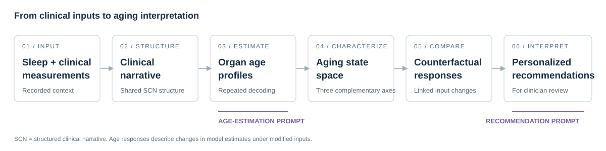

SMART organizes report structuring, age estimation and recommendation generation with corresponding checks. Two task prompts connect the clinical narrative to organ ages and personalized recommendations for clinician review.

01 / ACCELERATION
Age relative to chronological age
The difference between mean predicted age and chronological age preserves the direction of the age gap.
Mean predicted age − chronological age
02 / ASYNCHRONY
Differences between organs
Uneven organ age gaps describe variation within an individual beyond their overall sleep age.
Sample SD across organ age gaps
03 / INSTABILITY
Variation across decodings
Repeated estimates from a fixed narrative characterize variability in model interpretation.
Mean within-organ decoding SD
EXPLORE THE INPUTS
Different measurements. A shared narrative structure.
Three constructed examples illustrate respiratory burden, sleep continuity and variation in measurement coverage. Inspect the recorded fields and follow their transformation into a clinical narrative.
INPUT EXAMPLE 01
Respiratory + clinical context
Respiratory-event frequency, oxygenation and clinical history are represented together. The AHI scenario updates its component indices while retaining unrelated observations.
[Basic information]
Age: 60 years old
Sex: Male
[Lifestyle]
Smoking: Former smoker
Alcohol intake: No current use
[Physical examination]
BMI: 30.0 kg/m^2
Blood pressure: Systolic 142 mmHg, diastolic 88 mmHg
[Sleep study measurements]
Assessment: Overnight laboratory polysomnography
Total recording time: 450 min
Total sleep time: 360 min
Sleep efficiency: 80%
Sleep onset latency: 30 min
Wake after sleep onset: 60 min
AHI: 36 events/h of sleep, hypopneas scored with 3% desaturation or arousal
Obstructive apnea index: 12 events/h
Central apnea index: 1 event/h
Mixed apnea index: 1 event/h
Hypopnea index: 22 events/h
ODI (3%): 32 events/h of sleep
Mean SpO2: 93.5%
Minimum SpO2: 78%
T90: 10% of total sleep time
N1 sleep: 12%
N2 sleep: 54%
N3 sleep: 14%
REM sleep: 20%
Arousal index: 30 events/h
[Family history]
Cardiovascular history: unknown
[Medical history]
Hypertension: Recorded history
Diabetes: No reported history
Medication: Antihypertensive medication, specific agent unknown
INPUT EXAMPLE 02
Continuity + architecture
Low AHI accompanies short sleep and reduced sleep efficiency. Continuity and architecture are represented alongside clinical context.
[Basic information]
Age: 49 years old
Sex: Female
[Lifestyle]
Smoking: Never smoker
Alcohol intake: No current use
[Physical examination]
BMI: 24.3 kg/m^2
Blood pressure: Systolic 119 mmHg, diastolic 74 mmHg
[Sleep study measurements]
Assessment: Overnight laboratory polysomnography
Total recording time: 420 min
Total sleep time: 300 min
Sleep efficiency: 71.43%
Sleep onset latency: 30 min
Wake after sleep onset: 90 min
AHI: 2.4 events/h of sleep, hypopneas scored with 3% desaturation or arousal
ODI (3%): 2 events/h of sleep
Mean SpO2: 96.8%
Minimum SpO2: 91%
T90: 0% of total sleep time
N1 sleep: 10%
N2 sleep: 63%
N3 sleep: 12%
REM sleep: 15%
Arousal index: 22 events/h
[Family history]
Recorded history: unknown
[Medical history]
Hypertension: No reported history
Diabetes: No reported history
Medication: No regular medication reported
INPUT EXAMPLE 03
Different measurement coverage
Home-monitoring REI retains its recording-time denominator. Sleep duration and sleep stages remain unknown instead of being inferred from unavailable measurements.
[Basic information]
Age: 61 years old
Sex: Female
[Lifestyle]
Smoking: Never smoker
Alcohol intake: unknown
[Physical examination]
BMI: 28.1 kg/m^2
Blood pressure: Systolic 134 mmHg, diastolic 82 mmHg
[Sleep study measurements]
Assessment: Home respiratory monitoring
Recording time: 480 min
REI: 14.25 events/h of recording time, 3% desaturation definition
ODI (3%): 12 events/h of recording time
Mean SpO2: 94.8%
Minimum SpO2: 84%
Total sleep time: unknown
Sleep architecture: unknown
[Family history]
Recorded history: unknown
[Medical history]
Hypertension: Recorded history
Medication: Antihypertensive medication, specific agent unknown
The walkthrough notebook prepares the complete prompts and traces linked input changes. Its arithmetic exercise is separate from these clinical inputs.
TWO TASKS, ONE FRAMEWORK
Inspect the prompts behind SMART
AGE ESTIMATION
Clinical narrative → organ age profile
Supply an SCN and the requested age domains. Receive numerical ages and accompanying generated explanations. Repeated stochastic decoding supports mean ages and variability summaries.
Combine the SCN with a labelled baseline and counterfactual age table. Generate a clinical summary, prioritized recommendations and a follow-up plan for clinician review.
Principal study backbone: Llama-3.3-70B-Instruct. Stochastic setting: ten decodings, temperature 0.7, top-p 0.9. The released templates preserve the selected manuscript prompt text.
USE SMART
Start with an offline walkthrough
Render all three clinical narratives, prepare their age-estimation prompts and audit two counterfactual scenarios. Results are written to a local output folder.
The released study summaries retain every organ/outcome and all three strategies in the two supplied tables. The paired bootstrap evaluates each strategy on the same resampled participants, with 2,000 resamples.
10 organ-group AUC comparisons
Fig. 4h · greedy estimates, average single-decoding performance and mean-prediction performance.
Replot the supplied estimates with python analyses/replot.py. Recompute paired CIs from aligned participant scores with analyses/evaluate.py.
MOBILE PROTOTYPE
A continuous path from input to review
Report preparation, scanning, clinical-information entry and organ age profiles are brought together in the SMART interface. Report history supports review across assessments.
The images show the manuscript's mobile prototype. This release provides the research toolkit and interface artwork. Clinicians review generated recommendations.
Clinical inputs in this package are constructed examples. The two aggregate result tables are study-derived. Restricted participant data are obtained through their applicable access procedures.